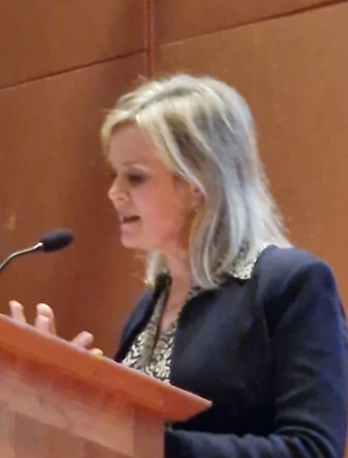
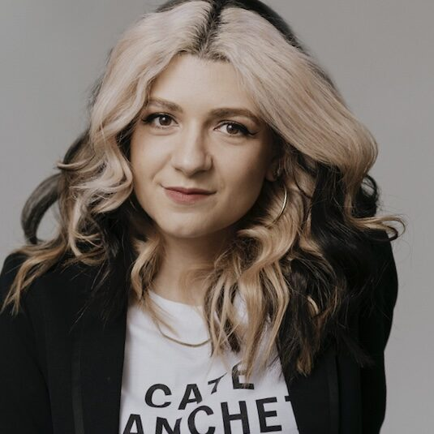
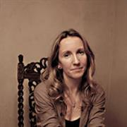
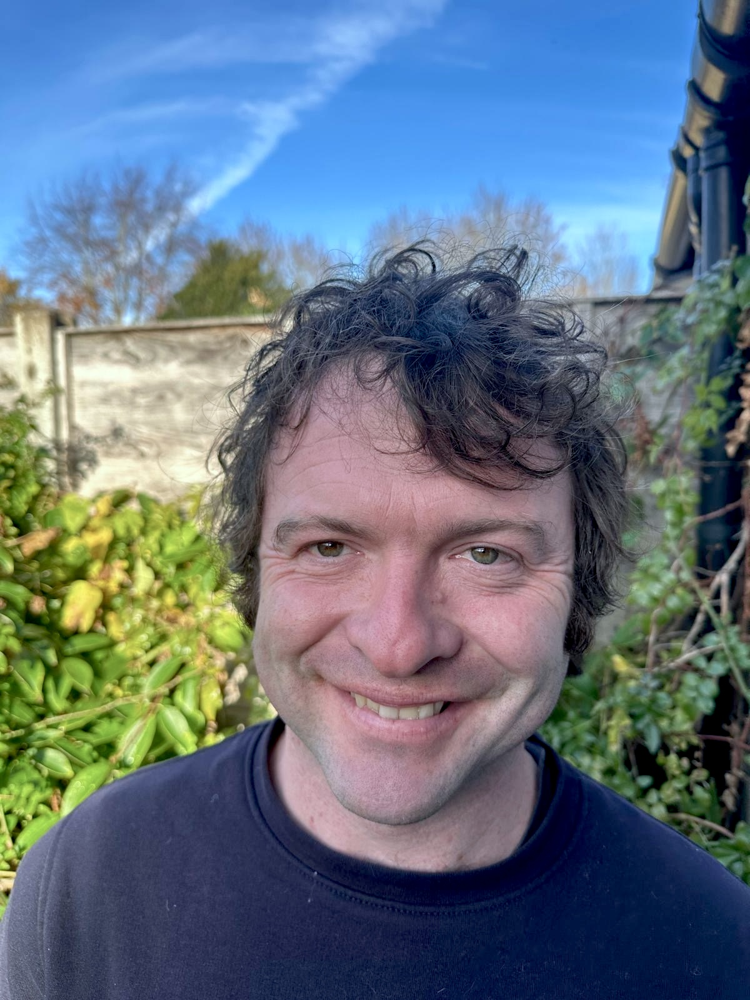

Investigator
University of Cambridge
Sally Faulkner is 1933 Professor of Spanish at the University of Cambridge, having previously held a personal chair in Hispanic Studies and Film Studies at the University of Exeter. She is the author of Literary Adaptations in Spanish Cinema (Támesis-Boydell & Brewer, 2004), A Cinema of Contradiction: Spanish Film in the 1960s (Edinburgh UP, 2006) and A History of Spanish Film: Cinema and Society 1910-2010 (Bloomsbury Academic 2013). The Cinema of Cecilia Bartolomé: Feminism and Francoism (Manchester UP, 2024) is newly available in paperback, and Leading Women in Spanish Cinema and Television in the Long 1970s, co-authored with Núria Triana-Toribio, is available via open access here.

Investigator
King's College London
Savina Petkova holds a PhD in Film Studies from King’s College London. Her AHRC-funded doctoral research explores the changing notion of identity (national, transnational, gender) through animal metaphors and metamorphoses in contemporary European cinema. She is also the Programming Panel Lead at the Cambridge Film Festival and co-curated the first retrospective of the first Bulgarian female filmmaker, Binka Zhelyazkova, in the UK at the Barbican in London.
As a freelance film critic, Savina has been published in Sight & Sound, Film Comment, Filmmaker Magazine, Variety, Senses of Cinema, among others. Savina is a member of the European Film Academy, the London Critics Circle, and FIPRESCI.
Investigator
University of Exeter
Will Higbee is Professor in Film Studies at the University of Exeter. His research focuses primarily on French and Francophone cinema, with a particular emphasis on immigrant and post-colonial cinema in France and the cinemas of the Maghreb. His research is also concerned with broader issues of national, transnational and diasporic cinema. He has published widely in these areas and has been invited to participate in film festivals and symposia in Europe, the USA, Hong Kong and North Africa. From 2006-14 he was an editor of the international peer-reviewed journal, Studies in French Cinema (now French Screen Studies) and now sits on the advisory board for the journal.
He is the author of Post-Beur Cinema (EUP, 2013) and co-editor of De-Westernizing Film Studies (Routledge, 2012). Between 2015-2018 he was the PI for an international research project on Transnational Moroccan Cinema funded by the AHRC. One of the outputs from this project was a monograph, Moroccan Cinema Uncut: Decentred Voices, Transnational Perspectives (EUP, 2020), co-authored by Higbee with Flo Martin and Jamal Bahmad. In 2019, Higbee secured following-on-funding for impact related activities linked to the original research project. This has led to the digitization and restoration of Door to the Sky (1989) a key film in the history of Moroccan cinema by pioneering feminist director Farida Benlyazid. As a result of this project, the film is being discovered by new international audiences through film festivals and online screenings.

Investigator
University of Exeter
Danielle Hipkins is Professor of Italian Studies and Film at the University of Exeter. She has written widely on gender representation in postwar Italian cinema, and published Italy’s Other Women: Gender and prostitution in postwar Italian cinema, 1940-1965 (Peter Lang, 2016). She was also co-editor of Prostitution and Sex Work in Global Cinema (Palgrave, 2017) with Kate Taylor-Jones. With Daniela Treveri Gennari, Catherine O’Rawe, Silvia Dibeltulo and Sarah Culhane she co-authored Italian Cinema Audiences: Histories and Memories of Cinema-going in Post-war Italy (Bloomsbury, 2020). She is now leading the AHRC-funded project A Girls’ Eye-view: Girlhood on the Italian screen since the 1950s together with Romana Andò (Università La Sapienza).

Software Engineer
Cambridge
Nye Jones is a freelance software engineer based in Cambridge, he has contributed to a range of Digital Humanities projects at the University of Cambridge and has a particular interest in increasing the archive material and research data freely available. His major projects have included the Digital Library of Global Moroccan Collections, the Charles Stewart Parnell Speeches project, and the Kaveri Delta Project. He has also taught Digital Humanities techniques to undergraduates in the Faculty of History.